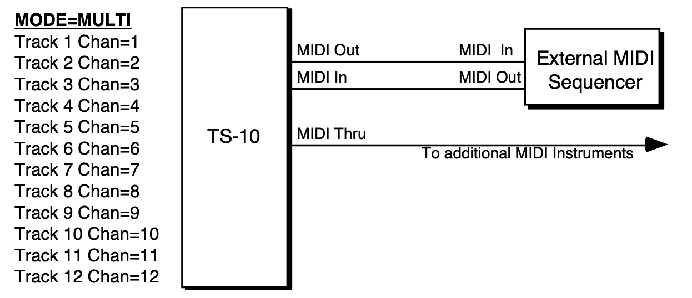

Performance / Composition Synthesizer · Version 3.0
Section 12 — Sequencing/MIDI Applications
This section covers a number of advanced sequencer applications, including using the TS‑10 with a variety of external MIDI devices.
Using the TS‑10 with a Drum Machine
When you use the TS‑10 in conjunction with a drum machine or other rhythm sequencer, there are basically three ways to go:
- Sync the drum machine’s clock to the TS‑10
- Sync the TS‑10’s clock to the drum machine
- Sequence the drum machine from the TS‑10 (just as you would a synthesizer)
To Sync a Drum Machine to the TS‑10:
- Connect the MIDI Out of the TS‑10 to the MIDI In of the drum machine.
- Set the drum machine to sync to MIDI clocks.
- Set the drum machine to receive on an unused MIDI Channel, OMNI OFF; or disable Channel information. You don’t want the drum machine playing TS‑10 sequence data intended for other instruments. MIDI , , and are real-time commands, and are sent and received regardless of MIDI channel or mode.
- The drum machine should now sync to the TS‑10’s clock. Pressing Play or Stop/Continue will Start, Stop and Continue the drum machine, assuming it receives those commands.
To Sync the TS‑10 to a Drum Machine:
- Connect the MIDI Out of the drum machine to the MIDI In of the TS‑10.
- Set the TS‑10 to sync to MIDI clocks. On the Sequencer Control page, select CLOCK=MIDI.
- Set the drum machine to not send channel info, or to send on a MIDI Channel that is not being used by any of the TS‑10 tracks. Again, , , and are sent and received regardless of MIDI channel or mode.
- The TS‑10 should now sync to the drum machine’s clock. Starting, Stopping or Continuing the drum machine will Start, Stop and Continue the TS‑10.
To Sequence a Drum Machine from a Track of the TS‑10:
- Connect the MIDI Out of the TS‑10 to the MIDI In of the drum machine.
- Set the drum machine to Tape Sync or External Clock, or any setting other than Internal or MIDI Clock. This way it will not play its own patterns, but will act only as a sound-producing device, sequenced from a track of the TS‑10.
- Set the drum machine to POLY (OMNI Off) mode, and select a MIDI Channel.
- From the Track MIDI Page, assign a track on the TS‑10 MIDI Status, and set it to the same MIDI Channel you assigned the drum machine.
- You should now be able to play the drum machine from the TS‑10 keyboard. You can then record a track on the TS‑10, from the TS‑10 keyboard, which will play on the drum machine — just as if you were sequencing an external synthesizer. The advantage of this approach is that some drum machines respond better to velocity when played from MIDI than when played from their own front panels. Thus you may get more dynamic range out of your drum machine if you use this approach. The disadvantage is that you use up TS‑10 sequencer memory to sequence the drum machine.
Song Position Pointers
The TS‑10 transmits and receives via MIDI. Song Position Pointers are MIDI commands that tell a sequencer or drum machine where to locate within a song or sequence. When the TS‑10 receives a , it will locate to the appropriate place in the selected song or sequence. The TS‑10 sends a over MIDI whenever you use the Auto-Locate control (the GOTO function on the Locate Page). Any receiving unit which recognizes will locate to the same spot. Not all remote MIDI devices recognize . Consult the manual of any other sequencing device you are using, to see if it does.MIDI Song Selects
allow a sequencer such as the TS‑10 to instruct a remote MIDI sequencer or drum machine to select a new song whenever you select a Sequence or Song on the TS‑10.
Whether or not the TS‑10 sends or receives depends on the setting of the SONG-SEL parameter on the MIDI Control sub-page.
The TS‑10 transmits and receives in Sequence Mode as well as Song Mode (depending again on the setting on the SONG-SEL parameter). This allows you to select any TS‑10 sequencer location from a remote sequencer, computer or drum machine, and vice versa.
They are set up as follows:
- # 00-59 will select TS‑10 Sequencer locations # 00-59.
- Selecting Sequencer locations # 00-59 will cause the TS‑10 to send # 00-59
MIDI Controller Tricks — Creating MIDI Track Templates
There are some subtle features of the TS‑10 sequencer which enhance its capabilities as a MIDI controller. You can change the sound and mix of every instrument in your rig with the push of a button, and create giant presets with as many as 12 remote MIDI devices split and/or layered.
Each sequence you create and store in the TS‑10’s sequencer memory contains up to 12 sets of Sound and Mixing information, each of which will be sent out on the designated MIDI Channel when you select that sequence. Each sequence also remembers all Performance/Track Parameters settings for each track, as well as which tracks are selected or layered.
If you have the TS‑10 connected to other instruments via MIDI, try this:
- Press Seqs/Songs, and select a -BLANK- location to create a new sequence. Name this sequence MIDI-OUT-1, or something similar, to indicate that it is specially set up as a MIDI controller template.
- Press the Seq/Song Tracks 1-6 button, and select the first track.
- Press Track MIDI, and set the track’s STATUS to SEND/RECV; on the second sub-page set the CHANNEL to the MIDI channel of one of your remote MIDI instruments; on the third sub-page, select a program for the instrument.
- Press Seq/Song Tracks 1-6, select another UNDEFINED track, and repeat the above steps, setting this track up to drive a different instrument. And so on, until you have one track playing each external instrument. Create a couple of MIDI-OFF tracks with different programs, too. Selecting one of them will let you play the TS‑10 only. Selecting any of the MIDI tracks will let you play the receiving instrument that is set to the same MIDI channel as that track.
- You see that from the Seq/Song Tracks 1-6 or 7-12 pages, you can change what plays from the TS‑10 keyboard simply by selecting different tracks. You can layer tracks together by double-clicking their soft buttons. You can adjust the mix, key range, transpose, etc. for any of the tracks.
- Now create another sequence. (The TS‑10 will ask you SAVE CHANGES TO <SEQ NAME>? Answer *YES*.) Name this sequence MIDI-OUT-2. For the tracks of the new sequence, go through the same procedure as before, but assigning different program numbers to the external instruments. (Remember always to change programs from the TS‑10’s Track MIDI sub-page.)
- Again, you can play a different external instrument, or the TS‑10 alone, or the TS‑10 and an external instrument, depending on which track(s) you select.
Now press Seqs/Songs and reselect the first sequence. (Again, the TS‑10 will ask you SAVE CHANGES TO <SEQ NAME>? Answer *YES*.) Notice when you select the new sequence that all the external instruments connected to the TS‑10 change to the proper program for that sequence — each track sent out a program change on its MIDI channel when the sequence was selected. Now select the second sequence again. Each external instrument again changes back to the proper program.
Notice that you haven’t recorded anything on either of these sequences. They exist merely as Track Templates, which serve two useful purposes when using the TS‑10 as a system controller:
- Every time you select a new sequence, each track can send a program change to an external instrument. You can change the sound that every remote MIDI device in your rig is playing with one press of a button. Also the same tracks will be selected or layered as when you last saved the sequence.
- When you select any track of a sequence, the TS‑10 keyboard plays whatever program is on that track, or sends on the track’s MIDI channel, or both. Select a different track and you have a different configuration. From the Seq/Song Tracks 1-6 and 7-12 pages you select any combination of local and/or MIDI sounds.
Of course you can record data on any of these sequences if you want. Whether you do or not, they will still work as templates. You can play external instruments from the TS‑10 or from their own keyboards. You can have a track send a program change to a MIDI effects processor (like the ENSONIQ DP/4); have it send program changes to a sampler (like the ASR-10) to load sounds, or to a drum machine to change patterns, just by selecting a new sequence. No doubt you will come up with some applications of your own, based on your equipment and your needs.
MULTI Mode — Receiving on up to 12 MIDI channels
When you select MODE=MULTI on the MIDI Control Page, the 12 tracks of the current sequence or song become like 12 “virtual instruments,” each receiving independently on its own MIDI channel, but all sharing the same 32 voices and the same effects set-up.- Press MIDI Control. Set MODE=MULTI. The 12 tracks of the current sequence will now each receive on its own MIDI channel, which you can select independently for each track.
- Create a new sequence. You might want to name this sequence *MULTI-IN, or something similar, to indicate that it is specially set up as a multi-channel MIDI receiver.
- Press Seq/Song Tracks 1-6. All the tracks except the first are still UNDEFINED. Select each of the tracks, defining them and putting the current sound on them. Press 7-12 and do the same for the 6 tracks there. Then press Seq/Song Tracks 1-6 again to return to the first 6 tracks.
- Press the Track MIDI button in the Track Parameters section. The first sub-page, labeled STAT, shows the status for the six tracks.
- Press Track MIDI again to reveal the second sub-page, labeled CHANNEL. Here you select the MIDI channels for the different tracks:
| CHANNEL | 01 | 02 | 03 |
| STOP | 04 | 05 | 06 |
Select any track and set it to receive on the MIDI Channel you wish. Now, as long the TS‑10 is in MODE=MULTI Mode, incoming MIDI information on that channel will be received by that track. Incoming will change the program on the track. Incoming will adjust the level of the track. Press Seq/Song Tracks 7-12 and do the same for the 6 tracks there.
If (as is often the case) you don’t want all 12 MIDI channels to receive:
- Press Track MIDI until you return to the STATUS sub-page and set the track(s) you want to disable to SEND/----. Any tracks set to SEND/---- will not respond to incoming MIDI (though they will send MIDI when played from the TS‑10 keyboard).
- Press the Seqs/Songs button to go to the Sequencer Bank page, and select the same sequence again (press the soft button above or below the sequence location that’s already underlined). The display will ask SAVE CHANGES TO <SEQ NAME> ?. Answer *YES*. This saves the track assignments you made. You might want to save this sequence to disk for future use.
- You don’t need to record anything on this sequence — just leave it as a template for receiving on up to 12 different MIDI Channels. Whenever you want the TS‑10 to act as a multi-channel MIDI receiver, just load or select this same template.
A Few Important Points About MULTI Mode
- When the TS‑10 is in MULTI mode, only the 12 tracks of the MULTI mode will receive MIDI information. Sounds and presets selected in the normal fashion will not respond to MIDI at all.
- Each of the 12 sequencer tracks (six in Seq/Song Tracks 1-6, six in 7-12) is completely independent and polyphonic. The TS‑10’s Dynamic Voice Allocation means each track can have up to all 32 voices if it needs them. If all 32 voices are in use and a track needs a voice, it will “steal” the voice from the oldest note (or the one with the lowest voice priority).
- The 12 tracks respond independently to MIDI program changes, allowing you to assign a new sound to a track via MIDI. The selected sound’s effect does not normally come with it — all of the 12 tracks in the sequence or song share the same effects setup, which can normally can be changed only by editing the effect from within sequence.
- You can, however, cause a sound’s effects set-up to become the sequence effect (which will then be applied to all 12 tracks) by sending a program change for the desired program number plus 60 (i.e. 60 to 119) (see “Receiving Program Changes,” in Section 3 — MIDI Control Page Parameters).
- Only one track can receive on a given MIDI Channel. If two (or more) tracks are set to the same MIDI Channel, the lower-numbered track will receive on that channel and any higher- numbered track(s) set to the same channel will not receive at all.
- You may not want all 12 Tracks to receive. Tracks that you leave in the UNDEFINED state will not receive any MIDI data. Just define as many tracks as you need. Or set some tracks to SEND/---- on the Track MIDI page. Tracks set to SEND/---- will not respond to incoming MIDI data.
Using the TS‑10 with an External MIDI Sequencer
For optimal results when using it with an external multi track sequencer, the TS‑10 should be set up as described above to receive in Multi Mode, and the 12 tracks of the current sequence assigned to receive on the desired MIDI channels.
The illustration below shows a typical configuration for using the TS‑10 with an external MIDI sequencer in MULTI Mode:

Each of the 12 tracks of the current sequence: keys, volume, controllers, and program changes, are controlled independently.
Note that the MIDI channel assignments shown above are merely default values. You can set any of the 12 tracks to receive on any of the 16 available MIDI channels (though, as mentioned above, only one track will receive on a given channel). Also, you can turn a track’s Status to SEND/---- (so that it does not receive incoming MIDI at all) if you want less than 12 channels to be recognized by the TS‑10.
When using the TS‑10 as both the controller and one of several sound generators with an external sequencer:
- Set up the MIDI connections as shown in the diagram above.
- Set the external sequencer to echo incoming MIDI data at its output.
- Press System three times and set the MIDI-TRK-NAMES parameter to ON. When this parameter is ON, you will see the name of the sound on a track (instead of *MIDI-CHAN-##) when the track’s status is MIDI.
- Press Seq/Song Tracks 1-6 or 7-12 and set up your tracks for sequencing:
- For tracks that you want to play a TS‑10 sound, set the Status to SEND/RECV. The track will send MIDI to the sequencer, and then will play local TS‑10 voices when it receives the information back at its MIDI input.
- For tracks which you want to play one of the other MIDI devices, but not play a TS‑10 sound, set the STATUS to LOCAL-OFF. The track will send MIDI to the sequencer, but will not play locally when the data is received. The MIDI Thru jack will send the information along to the remote MIDI devices.
Using The TS‑10 with a MIDI Guitar Controller
The TS‑10 makes an ideal voice module to use with any MIDI Guitar Controller which is capable of sending in MONO Mode. MONO Mode (MIDI Mode 4) allows a guitar controller to send the notes played on each string on a different MIDI Channel. This has the advantage of letting each string send pitch bends independently, which is the only way to truly recreate guitar technique on a synthesizer.
Some earlier guitar synths do not support MONO mode. You will have to consult the manual of your particular model to see if it does. If you have a guitar synth which only sends in POLY Mode (i.e. sends all six strings on the same MIDI Channel) you should use the TS‑10 in POLY Mode (or OMNI Mode) and set the guitar controller to send on the MIDI Channel that is selected for the Base Channel on the MIDI Page.
For MIDI Guitar Controllers which do support MONO Mode, the TS‑10 provides two types of MONO mode reception. The first is MONO A Mode, which is a simple and straightforward way of using MONO mode without getting involved with tracks or other complications:
- Connect the MIDI Out of the guitar controller (or its MIDI converter) to the MIDI In of the TS‑10.
- Set your guitar controller to send in MONO Mode on Channels 1-6. (Some models have an easy shortcut for getting into this state.)
- On the MIDI Control page, set the Base MIDI Channel to BASE-CHAN=01.
- Also on the MIDI Control page, set the MODE parameter to MODE=MONO A. This sets up the TS‑10 to respond monophonically to 12 consecutive MIDI channels starting from the Base Channel (consult Section 3 — MIDI Control Page Parameters for a more complete description of MONO Mode).
You can now select sounds or presets on the TS‑10, either from the front panel or from MIDI program changes, and the guitar controller will play those sounds exactly as if they were played from the keyboard.
If you are a little more adventurous, and would like the flexibility to put a different sound program on every string of the guitar, you can use MONO B mode, in which each track of the current sequence receives monophonically on its own MIDI channel, and can receive program changes independently. Where MONO A is like POLY mode with monophonic reception, MONO B is just like MULTI mode, except that each track is monophonic.
- Press MIDI Control. Set the MIDI In mode to MODE=MONO B. The 12 tracks of the current sequence will now each receive monophonically on its own MIDI channel
- Create a new sequence. You might want to name it “MONO-B IN”, or something similar, to indicate that it is specially set up for this type of reception.
- Press Seq/Song Tracks 1-6. All the tracks except the first are still UNDEFINED. Select each of the six tracks, defining them and putting the current program on them. You can leave Seq/Song Tracks 7-12 undefined.
- Press Track MIDI twice to go to the MIDI CHANNEL sub-page. Here you select the MIDI channels for the different tracks:
| CHANNEL | 01 | 02 | 03 |
| STOP | 04 | 05 | 06 |
The default values are as shown above. If you want to receive on a different set of MIDI channels, select each track and edit it accordingly. Unlike MONO A, in this mode the consecutive channel assignments are not automatic. You must set the tracks to six consecutive channels.
Now you’re ready to play. A few things to bear in mind:
- Notes played on each string will play only the corresponding track. Each string/track combination is totally independent.
- You can change the program for each track manually from the TS‑10’s front panel (using the Replace Track Sound function) or by sending Program Changes from the controller via MIDI.
- Each track will accept Program Changes independently. In many cases you will want to have the guitar controller send the same-numbered Program Change on all six channels so that all six strings play the same sound. You can, however, send the TS‑10 a different Program Change for each track. You could use this effect to have, for example, a bass sound play on the bottom two strings and a piano sound on the top four. Or if you are feeling experimental, you could play a different sound on each string.
- It’s a good idea to set up and save to disk a special template sequence, as described above, which you always use in conjunction with the guitar synth. That way you won’t accidentally change the programs in the tracks of an existing sequence.
- If your guitar synth can send certain MIDI controllers on their own MIDI Channels, have it send any controllers you want to affect all the tracks (such as the “whammy bar”) on the Base- Channel-minus-1. When the Base Channel is 1, Global controllers should be sent on Channel 16.